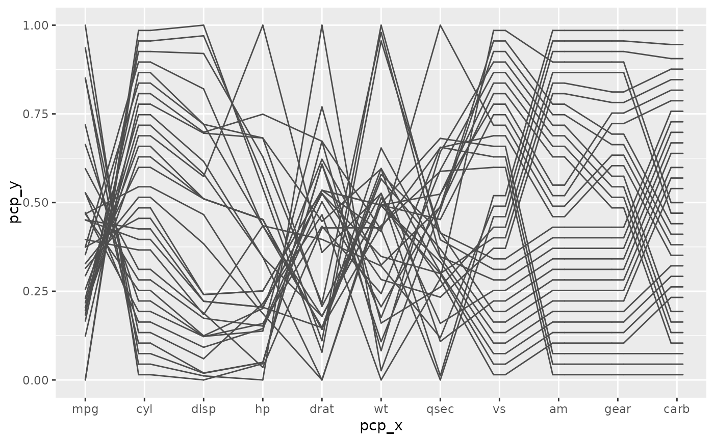
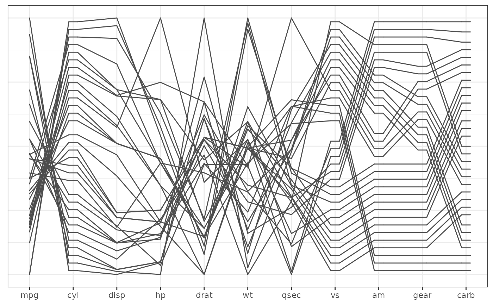
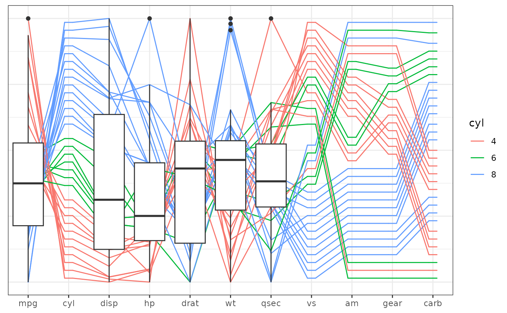
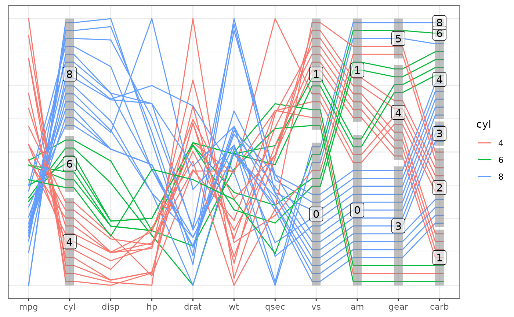

The ggpcp package for generalized parallel coordinate plots is implemented as a
ggplot2 extension.
In particular, this implementation makes use of ggplot2's layer framework,
allowing for a lot of flexibility in the choice and order of showing graphical elements.
| command | graphical element |
geom_pcp | line segments |
geom_pcp_axes | vertical lines to represent all axes |
geom_pcp_box | boxes for levels on categorical axes |
geom_pcp_labels | labels for levels on categorical axes |
These ggpcp specific layers can be mixed with ggplot2's regular geoms,
such as e.g. ggplot2::geom_point(), ggplot2::geom_boxplot(), ggdensity::geom_hdr(), etc.
Usage
geom_pcp_labels(
mapping = NULL,
data = NULL,
stat = "identity",
position = "identity",
na.rm = FALSE,
show.legend = NA,
inherit.aes = TRUE,
...
)Arguments
- mapping
Set of aesthetic mappings created by
aes(). If specified andinherit.aes = TRUE(the default), it is combined with the default mapping at the top level of the plot. You must supplymappingif there is no plot mapping.- data
The data to be displayed in this layer. There are three options:
If
NULL, the default, the data is inherited from the plot data as specified in the call toggplot().A
data.frame, or other object, will override the plot data. All objects will be fortified to produce a data frame. Seefortify()for which variables will be created.A
functionwill be called with a single argument, the plot data. The return value must be adata.frame, and will be used as the layer data. Afunctioncan be created from aformula(e.g.~ head(.x, 10)).- stat
The statistical transformation to use on the data for this layer. When using a
geom_*()function to construct a layer, thestatargument can be used the override the default coupling between geoms and stats. Thestatargument accepts the following:A
Statggproto subclass, for exampleStatCount.A string naming the stat. To give the stat as a string, strip the function name of the
stat_prefix. For example, to usestat_count(), give the stat as"count".For more information and other ways to specify the stat, see the layer stat documentation.
- position
A position adjustment to use on the data for this layer. This can be used in various ways, including to prevent overplotting and improving the display. The
positionargument accepts the following:The result of calling a position function, such as
position_jitter(). This method allows for passing extra arguments to the position.A string naming the position adjustment. To give the position as a string, strip the function name of the
position_prefix. For example, to useposition_jitter(), give the position as"jitter".For more information and other ways to specify the position, see the layer position documentation.
- na.rm
If
FALSE(the default), removes missing values with a warning. IfTRUEsilently removes missing values.- show.legend
logical. Should this layer be included in the legends?
NA, the default, includes if any aesthetics are mapped.FALSEnever includes, andTRUEalways includes. It can also be a named logical vector to finely select the aesthetics to display.- inherit.aes
If
FALSE, overrides the default aesthetics, rather than combining with them. This is most useful for helper functions that define both data and aesthetics and shouldn't inherit behaviour from the default plot specification, e.g.borders().- ...
other arguments passed on to
layer. These are often aesthetics, used to set an aesthetic to a fixed value, likecolor = 'red'orsize = 3. They may also be parameters to the paired geom/stat.
Value
a list consisting of a ggplot2::layer() object and its associated scales.
About Parallel Coordinate Plots
Parallel coordinate plots are a multivariate visualization that allows several aspects of an observed entity to be shown in a single plot. Each aspect is represented by a vertical axis (giving the plot its name), values are marked on each of these axes. Values corresponding to the same entity are connected by line segments between adjacent axes. This type of visualization was first used by d’Ocagne (1985). Modern re-inventions go back to Inselberg (1985) and Wegman (1990). This implementation takes a more general approach in that it is also able to deal with categorical in the same principled way that allows a tracking of individual observations across multiple dimensions.
Data wrangling
The data pipeline feeding geom_pcp is implemented in a three-step modularized
form rather than in a stat_pcp function more typical for ggplot2 extensions.
The three steps of data pre-processing are:
| command | data processing step |
pcp_select | variable selection (and horizontal ordering) |
pcp_scale | (vertical) scaling of values |
pcp_arrange | dealing with tie-breaks on categorical axes |
Note that these data processing steps are executed before the call to ggplot2
and the identity function is used by default in all of the ggpcp specific layers.
Besides the speed-up by only executing the processing steps once for all layers,
the separation has the additional benefit, that it provides the users with the
possibility to make specific choices at each step in the process. Additionally,
separation allows for a cleaner user interface: parameters affecting the data
preparation process can be moved to the relevant (set of) function(s) only, thereby
reducing the number of arguments without any loss of functionality.
References
M. d’Ocagne. (1885) Coordonnées parallèles et axiales: Méthode de transformation géométrique et procédé nouveau de calcul graphique déduits de la considération des coordonnées parallèles. Gauthier-Villars, page 112, https://archive.org/details/coordonnesparal00ocaggoog/page/n10.
Al Inselberg. (1985) The plane with parallel coordinates. The Visual Computer, 1(2):69–91, doi:10.1007/BF01898350 .
Ed J. Wegman. (1990) Hyperdimensional data analysis using parallel coordinates. Journal of the American Statistical Association, 85:664–675, doi:10.2307/2290001 .
Examples
library(ggplot2)
data(mtcars)
mtcars_pcp <- mtcars |>
dplyr::mutate(
cyl = factor(cyl),
vs = factor(vs),
am = factor(am),
gear = factor(gear),
carb = factor(carb)
) |>
pcp_select(1:11) |> # select everything
pcp_scale() |>
pcp_arrange()
base <- mtcars_pcp |> ggplot(aes_pcp())
# Just the base plot:
base + geom_pcp()

# with the pcp theme
base + geom_pcp() + theme_pcp()

# with boxplots:
base +
geom_pcp(aes(colour = cyl)) +
geom_boxplot(aes(x = pcp_x, y = pcp_y),
inherit.aes=FALSE,
data = dplyr::filter(mtcars_pcp, pcp_class!="factor")) +
theme_pcp()

# base plot with boxes and labels
base +
geom_pcp(aes(colour = cyl)) +
geom_pcp_boxes() +
geom_pcp_labels() +
theme_pcp()
